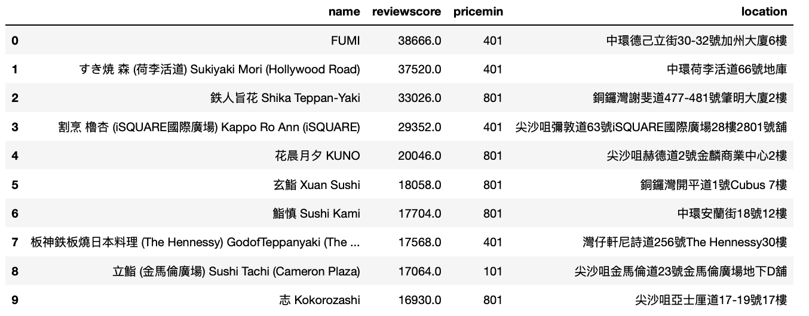
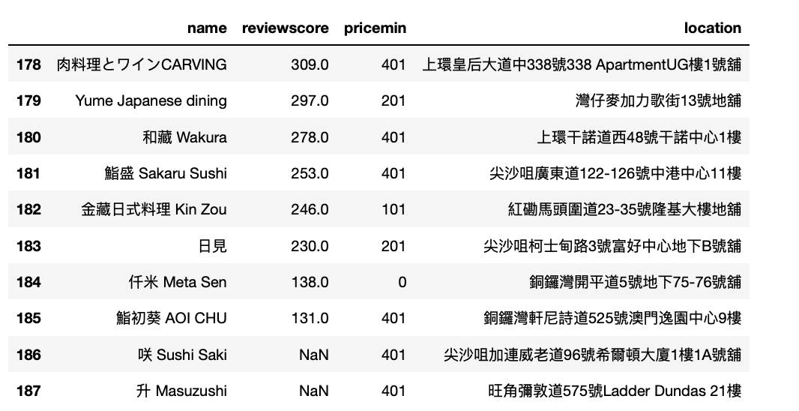
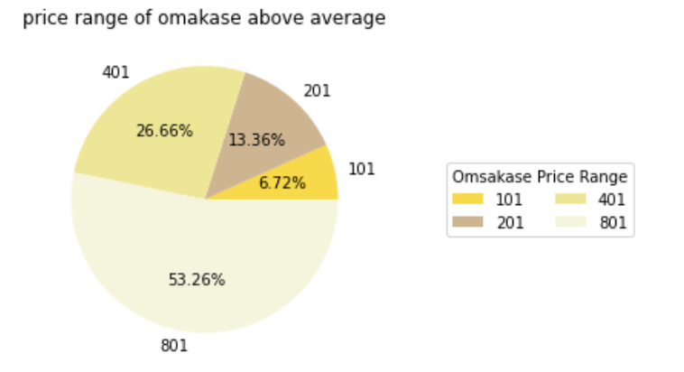

Welcome to my second assignment page. Here I would like to introduce some outcomes of my data analysis of OMAKASE in Hong Kong!
I am really interested in Omakase, and I really want to try some during my postgraduate year in Hong Kong. Therefore, it would really useful to analyse the data of Omasake Reseaurants in OpenRice.
I select Kowloon and Hong Kong Island as the areas I would explore. After scraping and cleaning the data, I set up my own (subjective) calculation for Omakase restaurant ranking in Hong Kong.
Reviewscore = (Collection * 1 + Goodreview *2 + Badreview * -2)
If someone put the restaurant into their collcetion, it means the restaurant must have something attractive, it ccounts 1 points. Goodreviews are usually after eating, it counts 2 points. Since usually few people woule give bad reviews, bad review means there must be something terrible about the restaurant, so it counts -2.
In this way, I use SQL to calculate the reviewsocore and show the top10 restaurants with highest reviewscore with panda.

And also the worst 10 in Hong Kong Island and Kowloon.

Also, I calculate the average reviewscore among all restaurant selected, which is about 6532.19.
So far so good right? However, I was also wondering that which price group that restaurants above the avergae score belong to? It is becuase my first understanding of Omakase is EXPENSIVE. My initial understading of the price of one meal goes up to 1,500 CNY to above 2,500 CNY in mainland China.
I am extremly curisous about this phenomon. Is it a norm? Does most of the "nice" restaurant cost that much?
So, here is the reult.

Although more than half of the restaurant with reviewscore above the average have the minimun price of 801 HKD, there are still a lot popular ones cost less than 801 HKD. SO, mayeb the nice quality and popularity of Omakase restaurants do not mean to we need to PAY a lot.
I am so happy to find out this result, and my wallet says she is ready!
More information can be found in my journal.
Thanks and goodbye.
Best wishes,
JY